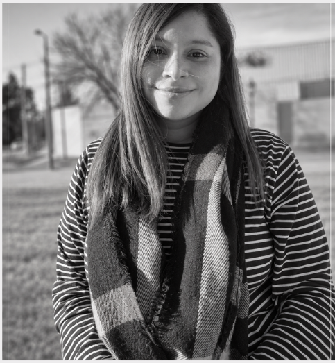
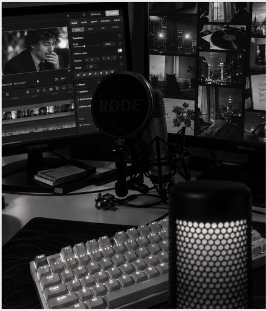

REDES
Reels, TikTok & Shorts
Clips verticales con cortes dinámicos, subtítulos, música, recursos visuales y hooks claros.
VIDEO EDITOR · CONTENIDO DIGITAL
Transformo material crudo en piezas ágiles, prolijas y pensadas para redes, streams y YouTube. Ritmo, subtítulos, sonido y una estética que acompaña tu identidad.
Disponible para proyectos freelance
¿QUÉ NECESITÁS?
Cada formato pide un ritmo distinto. La edición se adapta al contenido, no al revés.
REDES
Clips verticales con cortes dinámicos, subtítulos, música, recursos visuales y hooks claros.
STREAMS
Selección de momentos, montaje de cámara/gameplay, memes, zooms y ritmo para retención.
FORMATO LARGO
Edición narrativa, limpieza de pausas, B-roll, títulos, sonido y continuidad visual.
PORTFOLIO
REEL · 9:16
SOCIAL · 9:16
REEL · 9:16
HIGHLIGHTS · 16:9 / 9:16
TALKING HEAD
VIDEO · 16:9


SOBRE MÍ
Soy Camila, editora de video autodidacta. Me gusta agarrar material en bruto y encontrarle el ritmo: qué cortar, qué dejar respirar y qué recurso suma de verdad.
Trabajo principalmente con contenido para redes, streams, gaming, gastronomía, eventos y formatos de YouTube. Si algo todavía no lo sé, lo investigo y lo aplico.
CÓMO TRABAJO
Reviso objetivo, formato, referencias y qué querés transmitir.
Selecciono, corto, ritmo, subtítulos, sonido y recursos necesarios.
Revisamos detalles y dejo la pieza lista para publicar.
CONTACTO
Contame qué estás haciendo y vemos cómo llevarlo a una pieza que funcione.
Escribime por mail Reemplazá TUEMAIL@EMAIL.COM por tu mail real en index.html.